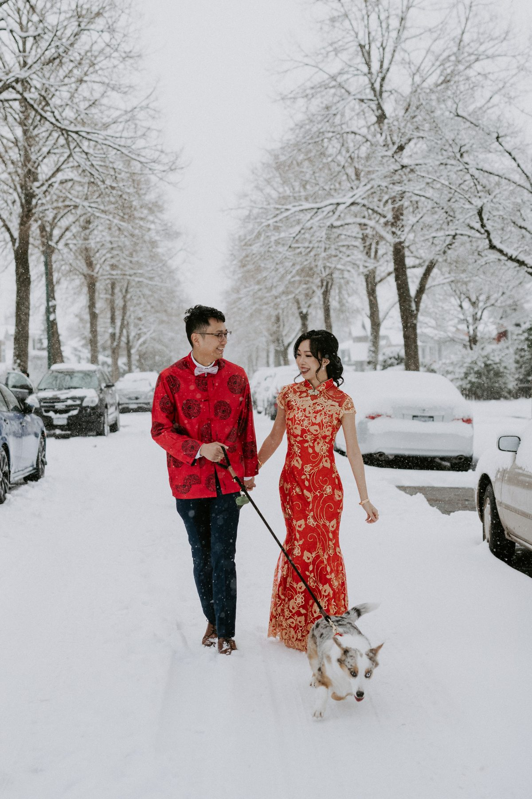
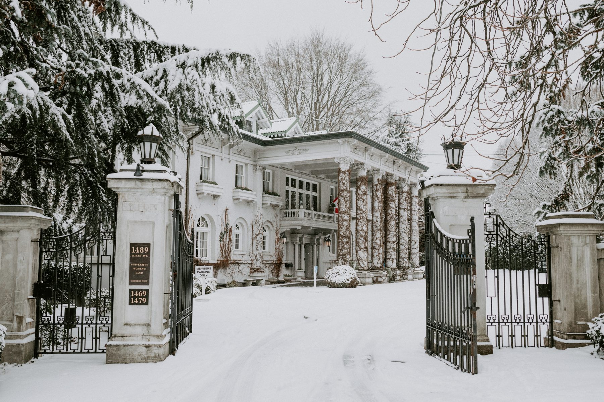
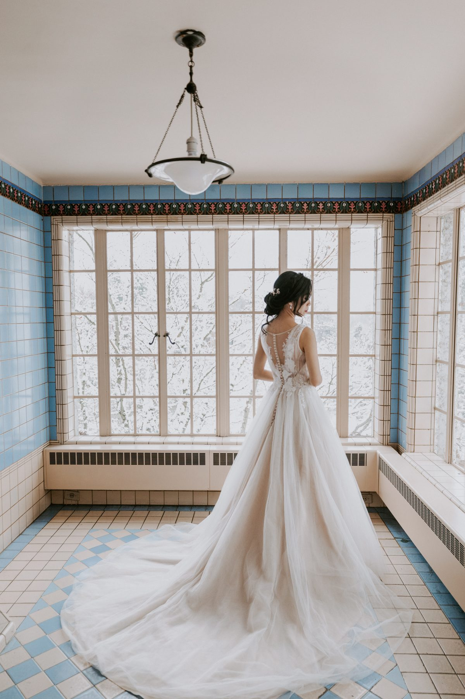
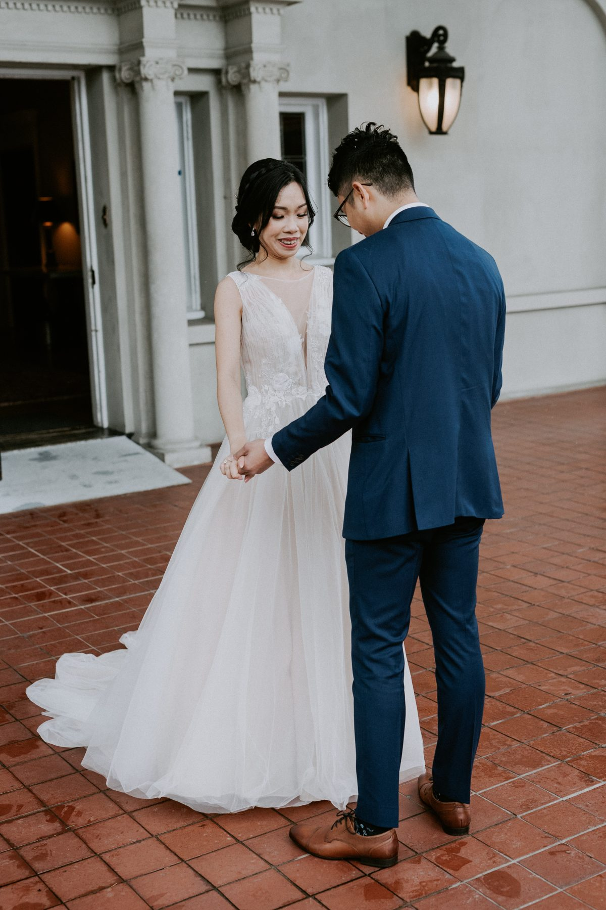
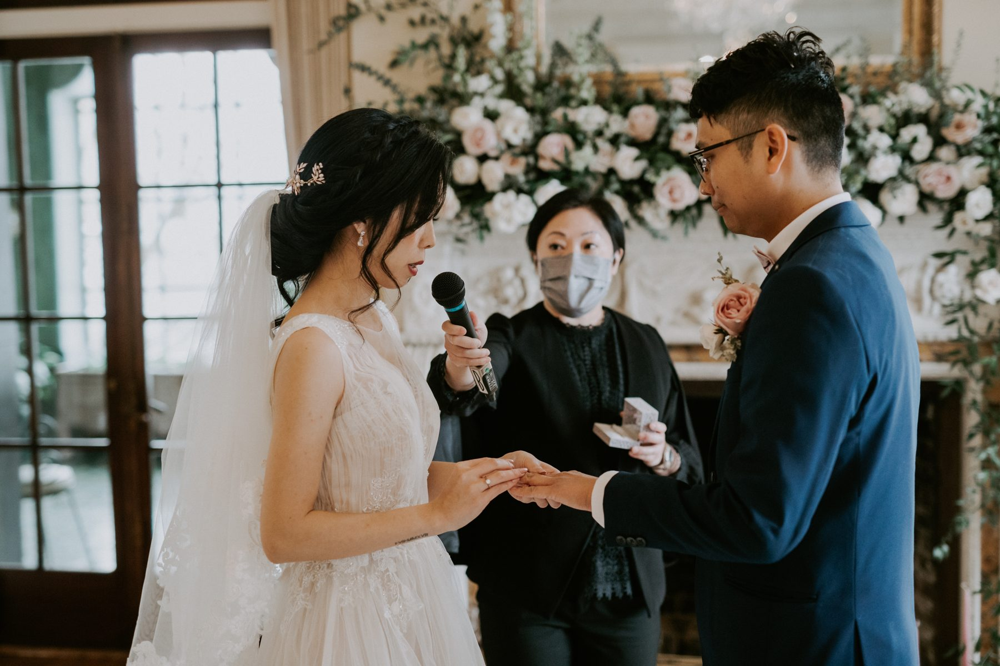

It snowed on Teresa and Victor's wedding day. In Vancouver. On purpose, as far as I'm concerned.
They did not plan for it. Nobody does. But by the time we finished the morning tea ceremony the whole city had gone white, and their corgi was standing in the middle of the street looking deeply offended about it.
This is the kind of day couples worry about for months and then remember forever.
Teresa and Victor began with a traditional Chinese tea ceremony at the family home. Red qipao, red tang jacket, a living room packed with parents and aunties, and a tray of tea cups going around one elder at a time.
If you are planning a tea ceremony, here is the practical advice. Put it first. Tell your photographer the order of elders ahead of time. And pick a room with a window, because this part of the day happens close and fast and it is mostly faces.
The reward is gifts, red envelopes and jewellery, and the moments between them. A grandmother fixing a bracelet. A dad who pretends he isn't emotional. You cannot stage that. You can only be in the room.
We walked out the front door and the street was gone. Parked cars were soft white lumps. Teresa, in her red qipao, picked her way along the sidewalk beside Victor with the corgi trotting ahead of them.

I will say this plainly. A snowy street in a red outfit is a better photo than most places you could drive to for it. Red against white does the work for you. Nothing needs editing, nothing needs a filter, and the scene reads as a story instead of a backdrop.
The ceremony and reception were at Hycroft Manor in Shaughnessy, a 1911 mansion with a columned terrace, a sunroom lined in blue tile, and a drawing room with a fireplace and tall arched windows. On a normal day it is lovely. In snow, it looks like it was built for this.

Here is what matters if you are shopping for a venue. Hycroft gives you indoor variety. We had the sunroom for getting ready, the terrace for portraits, a green conservatory corner for something moodier, and the drawing room for the ceremony. When the weather changed what was possible outdoors, the building kept offering us somewhere else to go.

Teresa and Victor chose a first look. Snow still lay on the terrace, which meant the whole place was quiet in the way only snow makes a place quiet.

I recommend a first look more often than not. Not because it saves time, though it does. Because it gives two people a private minute before the day begins asking things of them. If you are on the fence, read our piece on first look versus aisle reveal.
They married in the drawing room. Chandelier, florals around the mantel, guests in chairs close enough to hear every word. The vows were short and the room was warm.

I want to flag something about rooms like this one. They photograph beautifully, but they photograph best when the couple stands near the windows. Ask your photographer to walk the room with you before the day and work out where the light is strongest. That one conversation shapes your ceremony photos more than almost anything else.
After the cake, we went outside again. The light had gone silver and the garden had gone quiet, and Teresa and Victor walked the steps in front of the mansion like they owned the place for the afternoon.
Her gown was ivory, the stone was grey, and the whole world around them was white, and it still read as warm. That is the quiet trick of winter weddings. Take away the green and the colour that is left, the red of the morning, the navy of the suit, the blush of a bouquet, hits harder.
Do not build your plan around the weather. Build it around a venue that survives it. A place with real rooms, real windows, and a covered terrace gives you options at nine in the morning and at four in the afternoon, whatever the sky did in between.
Warm up your couple. Bring boots and a thick coat that is photogenic. Leave a window of time for the unplanned thing, whether that is snow, a corgi, or a grandmother who wants one more picture.
And book a photographer who is excited about the forecast. We were.
SimplyWed Studio is a Vancouver wedding and elopement photography studio. Send us your date through the contact page and we will walk through your venue with you before the day.
← Back to the journal